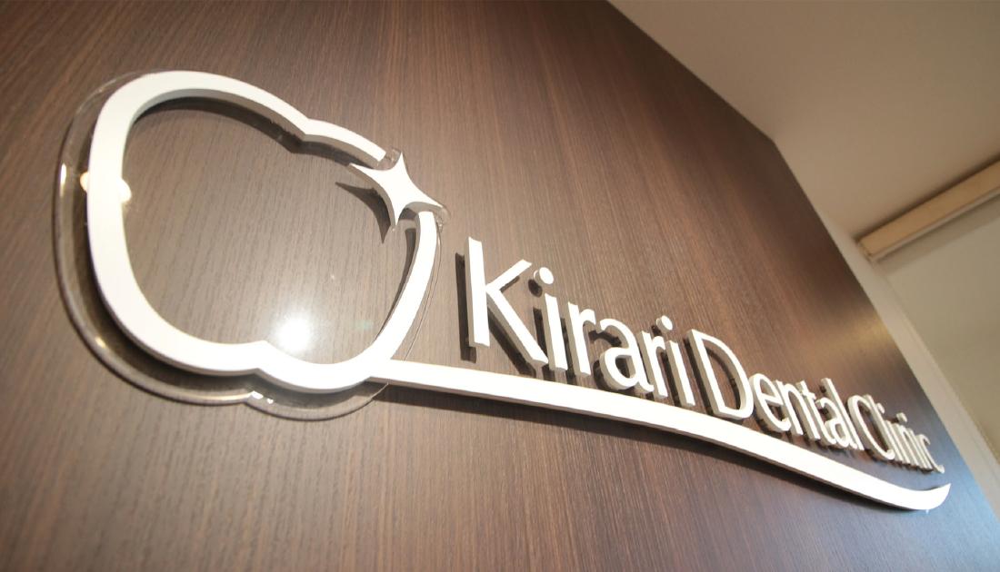
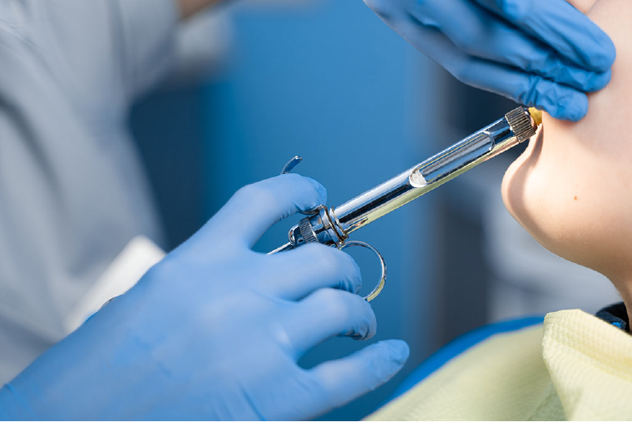
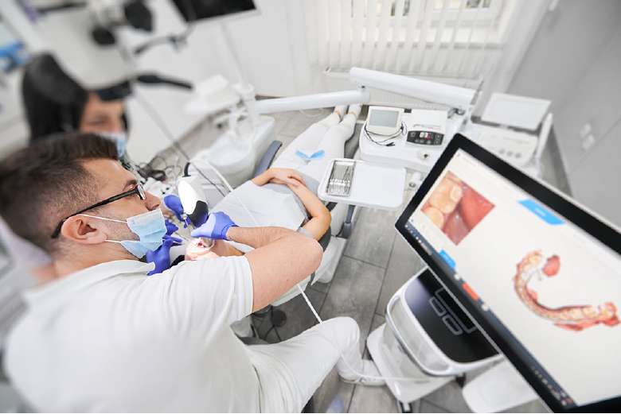
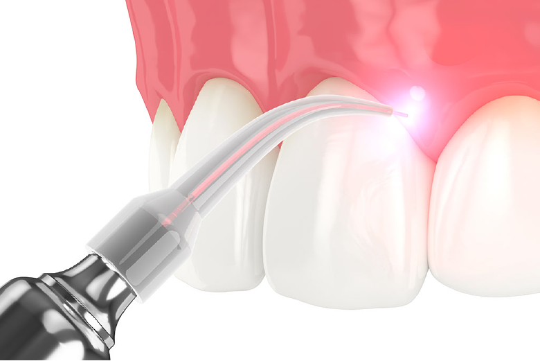
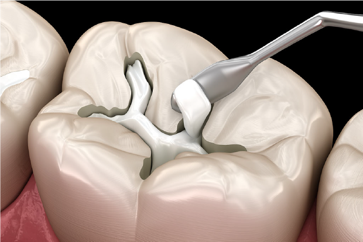

1st
promise
患者さまへのお約束１
きらり歯科クリニックのCredo
- わたしたちは、患者さまとの「心のつながり」を真摯に育みます
- わたしたちは、患者さまをいつも笑顔でお迎えします
- わたしたちは、自分の家族に受けさせたい治療を提供します
- わたしたちは、患者さまが知りたい情報をわかりやすくご説明します
- わたしたちは、おもてなしといたわりの気持ちで、患者さまの声に耳を傾けます
- わたしたちは、患者さまとの言葉のキャッチボールを楽しみます
- わたしたちは、共通の意識と知識を持ち、助け合い、支え合い、成長し合える仲間です
- わたしたちは、患者さまがご自身で歯を守れる力「デンタルIQ」の向上がとてもうれしいです
- わたしたちは、きらり歯科クリニックの一員として誇りを持ち、患者さまに心地の良いホスピタリティを提供します
- 最後に、わたしたちは進化を止めません
まだまだ未完成であることを自覚し、日々患者さまに寄り添い、患者さまの声にお応えしながら、成長を続けます
2nd
promise
患者さまへのお約束2

3rd
promise
患者さまへのお約束3

4th
promise
患者さまへのお約束4


Copyright 2021 きらり歯科クリニック